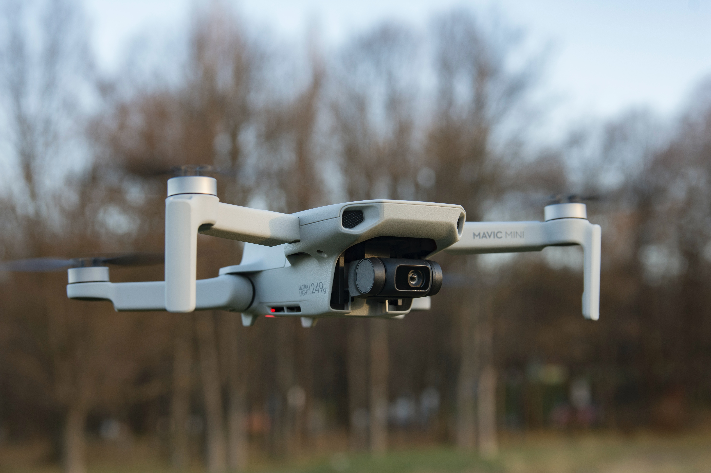

DJI Mavic Mini

DJI Mavic Mini to ultralekki i kompaktowy dron, idealny dla początkujących i osób, które cenią mobilność. Pomimo niewielkich rozmiarów, oferuje wiele zaawansowanych funkcji.
Główne cechy:
- Kamera 2.7K: Mavic Mini jest wyposażony w kamerę o rozdzielczości 2.7K, co pozwala na nagrywanie wideo i robienie zdjęć w dobrej jakości.
- Ultralekki: Dron waży zaledwie 249 gramów, co oznacza, że w niektórych krajach nie wymaga rejestracji.
- Stabilizacja: Oferuje stabilizację na trzech osiach, co pozwala na płynne nagrywanie w trakcie lotu.